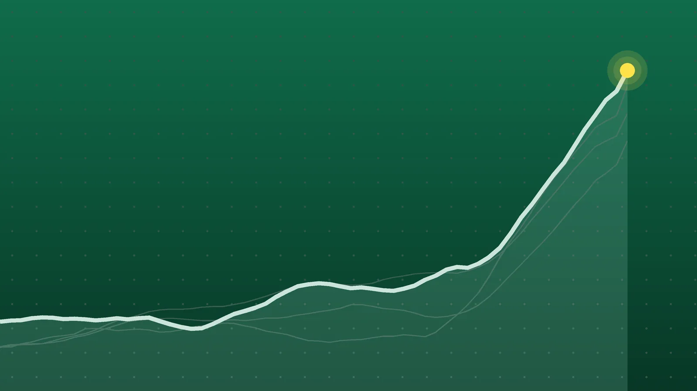

SportsExplainer
Premier League Scores, Oct. 24: Villa End Man City’s Perfect Run
City lost for the first time this season, so Arsenal pulled level on 21 points. Tottenham won at Stamford Bridge without conceding for the first time since 1986.

Quick take
- Nicolas Jackson scored in the 7th and 60th minutes as Aston Villa beat Manchester City 2-1, City’s first league defeat under Enzo Maresca.
- Arsenal beat Everton 2-0 with goals from Ezri Konsa and Gabriel, who was making his 200th Premier League appearance.
- Arsenal and City are level on 21 points after eight games, with City three goals better on goal difference.
- Tottenham won 2-0 at 10-man Chelsea after a Mike Penders own goal and a late Mathys Tel goal; Cole Palmer was sent off.
Why it's trending Four Premier League matches on Saturday, Oct. 24, included Manchester City’s first league loss of the season and a London derby win for Tottenham.
Premier League scores for Oct. 24
Manchester City’s unbeaten start to the season ended at Villa Park on Saturday. Nicolas Jackson scored twice, and Aston Villa won 2-1, the first league defeat for City since Enzo Maresca took charge, Sky Sports reported. City had won all seven of their previous league games.
That opened the door for Arsenal, who beat Everton 2-0 at the Emirates later in the afternoon and drew level with City on 21 points. In the evening game, Tottenham won 2-0 at Chelsea, and earlier Fulham edged Coventry City 1-0. Four matches produced eight goals, and the road teams won two of them.
All final scores
| Winner | Score | Loser | Note |
|---|---|---|---|
| Aston Villa | 2-1 | Manchester City | Home win; Nicolas Jackson scored both Villa goals; Erling Haaland scored for City |
| Arsenal | 2-0 | Everton | Home win; Ezri Konsa (7th minute) and Gabriel (68th) |
| Fulham | 1-0 | at Coventry City | Oscar Bobb scored in the 80th minute |
| Tottenham Hotspur | 2-0 | at Chelsea | Mike Penders own goal, Mathys Tel; Chelsea’s Cole Palmer sent off |
Jackson ends City’s winning run
Jackson put Villa ahead in the 7th minute after a loose touch from Marc Guehi, according to the Guardian’s report as republished by UA.NEWS. Haaland headed City level early in the second half, and Jackson restored the lead on the hour.
City pushed for an equalizer. Iliman Ndiaye hit the woodwork, and Villa goalkeeper Zion Suzuki made several important stops, ANI reported via The Tribune. It was Villa’s first home league win of the season.
Jackson, who arrived from Chelsea in the summer, now has six goals in his past six games. BBC Sport noted that the win came exactly four years after Unai Emery was hired to manage the club. City have now lost on four straight visits to Villa Park.
Arsenal draw level at the top
Arsenal scored early from a set piece. Ezri Konsa finished at the back post in the 7th minute for his first goal for the club, with Viktor Gyokeres setting it up, Sky Sports said. Gabriel headed in Ben White’s cross in the 68th minute to make it 2-0.
Gabriel’s goal came in his 200th Premier League appearance and was his 21st league goal, according to TNT Sports. The defending champions have won seven of their eight league games. Everton, who also lost 2-0 to Chelsea last weekend, have now gone 14 league visits to Arsenal without a win, Sky reported.
Spurs win at 10-man Chelsea
The evening London derby was scoreless until the 77th minute. Chelsea goalkeeper Mike Penders punched a Mateus Fernandes corner into his own net, according to Sky Sports’ match report and NBC Sports. Cole Palmer was shown a second yellow card around the 80th minute, and Mathys Tel added a solo goal in the 87th.
It was Tottenham’s first clean sheet at Stamford Bridge since December 1986, both outlets reported. Spurs have won back-to-back games under Roberto De Zerbi after beating Coventry 2-1 on Monday. Chelsea manager Xabi Alonso said afterward, “We win and we lose together,” The Independent reported.
At Coventry, Bobb’s 80th-minute strike was his first Premier League goal for Fulham, per ESPN, and gave Alvaro Arbeloa’s side a second win in a row, Sky reported.
What it means
The top of the table now has two clubs level after eight games:
| Club | Played | Record | Points | Goal difference |
|---|---|---|---|---|
| Manchester City | 8 | 7-0-1 | 21 | +11 |
| Arsenal | 8 | 7-0-1 | 21 | +8 |
Before Saturday, Arsenal trailed City by three points. One result swung that to zero, and City now lead only on goal difference, by three goals. Both clubs have dropped points in exactly one game, so the race is as tight as it can be after eight rounds.
Further back, Chelsea stayed fourth on 13 points, eight behind the leaders. Villa climbed to sixth with 11 points, 10 off the pace, after collecting three wins in eight games. Everton sit ninth on 10 points after back-to-back losses.
Tottenham’s two wins in six days lifted them to 9 points. Before Monday’s game with Coventry they had 3 points from six games, so the last two results tripled their total.
What’s next
Five more games are scheduled for Sunday, Oct. 25, according to Football Web Pages. Britain moves its clocks back an hour early Sunday, while the U.S. does not change until Nov. 1, so the gap between London and the East Coast is four hours this week. All times ET:
- Crystal Palace vs. Newcastle United, 10 a.m.
- Hull City vs. Brentford, 10 a.m.
- Liverpool vs. Brighton & Hove Albion, 10 a.m.
- Manchester United vs. AFC Bournemouth, 10 a.m.
- Sunderland vs. Leeds United, 12:30 p.m.
No Premier League games are listed for Monday. Next weekend, Chelsea face Manchester United and Tottenham host Crystal Palace on Oct. 31, NBC Sports reported.
Sources
- Sky Sports Aston Villa 2-1 Man City: Nicolas Jackson scores both Villa goals as Enzo Maresca's 100 per cent record ends in defeatOct. 24, 2026
- BBC Sport via Yahoo Sports From Chelsea reject to Watkins 'upgrade' - Jackson makes fast Villa startOct. 24, 2026
- UA.NEWS (citing The Guardian) Aston Villa end Manchester City's perfect run with Jackson doubleOct. 24, 2026
- The Tribune (ANI) Premier League: Aston Villa end Man City's perfect run; Arsenal level with table-toppers after 2-0 win over EvertonOct. 24, 2026
- Sky Sports Arsenal 2-0 Everton: Goals from Ezri Konsa and Gabriel move the champions level on points with leaders Man CityOct. 24, 2026
- TNT Sports Arsenal v Everton - Premier League result as Gabriel header secures victory for Gunners after Ezri Konsa fires first goal for clubOct. 24, 2026
- ESPN Coventry 0-1 Fulham (Oct 24, 2026) Final Score - ESPNOct. 24, 2026
- Sky Sports Coventry 0-1 Fulham: Oscar Bobb's moment of magic makes it back-to-back wins for Alvaro Arbeloa's sideOct. 24, 2026
- Sky Sports Chelsea 0-2 Tottenham: Mike Penders error and Mathys Tel earn Spurs rare victory at Stamford Bridge as Cole Palmer sent offOct. 24, 2026
- NBC Sports Chelsea 0-2 Tottenham Hotspur: Spurs surge through storm, beat 10-man BluesOct. 24, 2026
- The Independent via Yahoo Sports Cole Palmer's moment of madness lights the fuse as Chelsea implode in derby defeat by TottenhamOct. 24, 2026
- Football Web Pages Premier League fixtures, Sunday 25 October 2026Oct. 24, 2026
Keep reading

Champions League Scores, Oct. 21: Rice Rescues Arsenal at Bayern
Champions League scores for Oct. 21, 2026: all nine Matchday 3 results, from Bayern 2-2 Arsenal and Real Madrid 4-1 Leipzig to Como’s 4-1 rout of Man United.

Premier League Scores, Oct. 25: Bournemouth Rout Man United 3-0
Premier League scores for Oct. 25, 2026: Bournemouth won 3-0 at Man United, Liverpool beat Brighton 2-0, Newcastle won at Palace, plus two draws.
Bundesliga Scores, Oct. 24: Late Beier Goal Puts Dortmund on Top
Bundesliga scores for Oct. 24, 2026: Dortmund beat Frankfurt 1-0 to lead the table, Bremen won 3-2 at Mainz and Leipzig routed Elversberg 4-0.